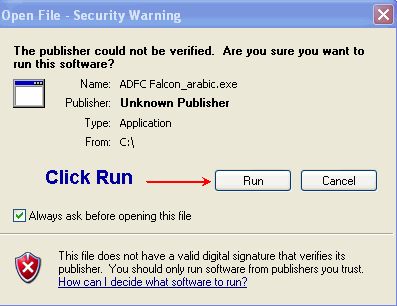

Introduction
Futures markets have been
described as continuous auction markets and as clearing houses for the latest
information about supply and demand. They are the meeting places of buyers
and sellers of an ever-expanding list of commodities that today includes
agricultural products, metals, petroleum, financial instruments, foreign
currencies and stock indexes. Trading has also been initiated in options on
futures contracts, enabling option buyers to participate in futures markets
with known risks.
Notwithstanding the rapid
growth and diversification of futures markets, their primary purpose remains
the same as it has been for nearly a century and a half, to provide an
efficient and effective mechanism for the management of price risks. By
buying or selling futures contracts--contracts that establish a price level
now for items to be delivered later--individuals and businesses seek to
achieve what amounts to insurance against adverse price changes. This is
called hedging.
Other futures market
participants are speculative investors who accept the risks that hedgers wish
to avoid. Most speculators have no intention of making or taking delivery of
the commodity but, rather, seek to profit from a change in the price. That
is, they buy when they anticipate rising prices and sell when they anticipate
declining prices. The interaction of hedgers and speculators helps to provide
active, liquid and competitive markets. Speculative participation in futures
trading has become increasingly attractive with the availability of
alternative methods of participation. Whereas many futures traders continue
to prefer to make their own trading decisions--such as what to buy and sell
and when to buy and sell--others choose to utilize the services of a
professional trading advisor, or to avoid day-to-day trading responsibilities
by establishing a fully managed trading account or participating in a
commodity pool which is similar in concept to a mutual fund.
For those individuals who
fully understand and can afford the risks which are involved, the allocation
of some portion of their capital to futures trading can provide a means of
achieving greater diversification and a potentially higher overall rate of
return on their investments. There are also a number of ways in which futures
can be used in combination with stocks, bonds and
other investments.
Speculation in futures
contracts, however, is clearly not appropriate for everyone. Just as it is
possible to realize substantial profits in a short period of time, it is also
possible to incur substantial losses in a short period of time. The
possibility of large profits or losses in relation to the initial commitment
of capital stems principally from the fact that futures
trading is a highly leveraged form of speculation. Only a relatively
small amount of money is required to control assets having a much greater
value. As we will discuss and illustrate, the leverage of futures trading can
work for you when prices move in the direction you anticipate or against you
when prices move in the opposite direction.
It is not the purpose of this
brochure to suggest that you should--or should not--participate in futures
trading. That is a decision you should make only after consultation with your
broker or financial advisor and in light of your own financial situation and
objectives.
Intended to help provide you
with the kinds of information you should first obtain--and the questions you
should seek answers to--in regard to any investment you are considering:
* Information about the investment itself
and the risks involved
* How readily your investment or position
can be liquidated when such action is necessary or desired
* Who the other market participants are
* Alternate methods of participation
* How prices are arrived at
* The costs of trading
* How gains and losses are realized
* What forms of regulation and protection
exist
* The experience, integrity and track
record of your broker or advisor
* The financial stability of the firm
with which you are dealing
In sum, the information you need to be an
informed investor.
Futures Market
The frantic shouting and signaling of
bids and offers on the trading floor of a futures exchange undeniably convey
an impression of chaos. The reality however, is that chaos is what futures
markets replaced. Prior to the establishment of central grain markets in the
mid-nineteenth century, the nation farmers carted their newly harvested crops
over plank roads to major population and transportation centers each fall in
search of buyers. The seasonal glut drove prices to giveaway levels and,
indeed, to throwaway levels as grain often rotted in the streets or was
dumped in rivers and lakes for lack of storage. Come spring, shortages
frequently developed and foods made from corn and wheat became barely
affordable luxuries. Throughout the year, it was each buyer and seller for himself with neither a place nor a
mechanism for organized, competitive bidding. The first central markets were
formed to meet that need. Eventually, contracts were entered into for forward
as well as for spot (immediate) delivery. So-called forwards were the
forerunners of present day futures contracts.
Spurred by the need to manage price and
interest rate risks that exist in virtually every type of modern business,
today's futures markets have also become major financial markets.
Participants include mortgage bankers as well as farmers, bond dealers as
well as grain merchants, and multinational corporations as well as food
processors, savings and loan associations, and individual speculators.
Futures prices arrived at through
competitive bidding are immediately and continuously relayed around the world
by wire and satellite. A farmer in Nebraska, a merchant in Amsterdam, an importer in Tokyo and a speculator in Ohio thereby have simultaneous
access to the latest market-derived price quotations. And, should they
choose, they can establish a price level for future delivery--or for
speculative purposes--simply by having their broker buy or sell the
appropriate contracts. Images created by the fast-paced activity of the
trading floor notwithstanding, regulated futures markets are a keystone of
one of the world's most orderly envied and intensely competitive marketing
systems. Should you at some time decide to trade in futures contracts, either
for speculation or in connection with a risk management strategy, your orders
to buy or sell would be communicated by phone from the brokerage office you
use and then to the trading pit or ring for execution by a floor broker. If
you are a buyer, the broker will seek a seller at the lowest available price.
If you are a seller, the broker will seek a buyer at the highest available
price. That's what the shouting and signaling is about.
In either case, the person who takes the
opposite side of your trade may be or may represent someone who is a
commercial hedger or perhaps someone who is a public speculator. Or, quite
possibly, the other party may be an independent floor trader. In becoming
acquainted with futures markets, it is useful to have at least a general
understanding of who these various market participants are, what they are
doing and why.
Hedgers
The details of hedging can be somewhat
complex but the principle is simple. Hedgers are individuals and firms that
make purchases and sales in the futures market solely for the purpose of
establishing a known price level--weeks or months in advance--for something
they later intend to buy or sell in the cash market (such as at a grain
elevator or in the bond market). In this way they attempt to protect
themselves against the risk of an unfavorable price change in the interim. Or
hedgers may use futures to lock in an acceptable margin between their
purchase cost and their selling price. Consider this example:
A jewelry manufacturer will need to buy
additional gold from his supplier in six months. Between now and then,
however, he fears the price of gold may increase. That could be a problem
because he has already published his catalog for a year ahead.
To lock in the price level at which gold
is presently being quoted for delivery in six months, he buys a futures
contract at a price of, say, $350 an ounce.
If, six months later, the cash market
price of gold has risen to $370, he will have to pay his supplier that amount
to acquire gold. However, the extra $20 an ounce cost will be offset by a $20
an ounce profit when the futures contract bought at $350 is sold for $370. In
effect, the hedge provided insurance against an increase in the price of
gold. It locked in a net cost of $350, regardless of what happened to the
cash market price of gold. Had the price of gold declined instead of risen,
he would have incurred a loss on his futures position but this would have
been offset by the lower cost of acquiring gold in the cash market.
The number and variety of hedging
possibilities is practically limitless. A cattle feeder can hedge against a
decline in livestock prices and a meat packer or supermarket chain can hedge
against an increase in livestock prices. Borrowers can hedge against higher
interest rates, and lenders against lower interest rates. Investors can hedge
against an overall decline in stock prices, and those who anticipate having
money to invest can hedge against an increase in the over-all level of stock
prices. And the list goes on.
Whatever the hedging strategy, the common
denominator is that hedgers willingly give up the opportunity to benefit from
favorable price changes in order to achieve protection against unfavorable
price changes.
Speculators
Were you to speculate in futures
contracts, the person taking the opposite side of your trade on any given
occasion could be a hedger or it might well be another speculator--someone
whose opinion about the probable direction of prices differs from your own.
The arithmetic of speculation in futures
contracts--including the opportunities it offers and the risks it
involves--will be discussed in detail later on. For now, suffice it to say
that speculators are individuals and firms who seek to profit from
anticipated increases or decreases in futures prices. In so doing, they help
provide the risk capital needed to facilitate hedging.
Someone who expects a futures price to
increase would purchase futures contracts in the hope of later bring able to
sell them at a higher price. This is known as "going long."
Conversely, someone who expects a futures price to decline would sell futures
contracts in the hope of later being able to buy back identical and
offsetting contracts at a lower price. The practice of selling futures
contracts in anticipation of lower prices is known as "going
short." One of the attractive features of futures trading is that it is
equally easy to profit from declining prices (by selling) as it is to profit
from rising prices (by buying).
Floor
Traders
Persons known as floor traders or locals,
who buy and sell for their own accounts on the trading floors of the
exchanges, are the least known and understood of all futures market
participants. Yet their role is an important one. Like specialists and market
makers at securities exchanges, they help to provide market liquidity. If
there isn't a hedger or another speculator who is immediately willing to take
the other side of your order at or near the going price, the chances are
there will be an independent floor trader who will do so, in the hope of
minutes or even seconds later being able to make an offsetting trade at a
small profit. In the grain markets, for example, there is frequently only
one-fourth of a cent a bushel difference between the prices at which a floor
trader buys and sells.
Floor traders, of course, have no
guarantee they will realize a profit. They may end up losing money on any
given trade. Their presence, however, makes for more liquid and competitive
markets. It should be pointed out, however, that unlike market makers or
specialists, floor traders are not obligated to maintain a liquid market or
to take the opposite side of customer orders.
|
|
Reasons
for Buying futures contracts
|
Reasons
for Selling futures contracts
|
|
Hedgers
|
To
lock in a price and thereby obtain protection against rising prices
|
To
lock in a price and thereby obtain protection against declining prices
|
|
Speculators
and floor Traders
|
To
profit from rising prices
|
To
profit from declining prices
|
What is a Futures Contract?
There are two types of futures contracts,
those that provide for physical delivery of a particular commodity or item
and those which call for a cash settlement. The month during which delivery
or settlement is to occur is specified. Thus, a July futures contract is one
providing for delivery or settlement in July.
It should be noted that even in the case
of delivery-type futures contracts,very few actually result in delivery.* Not
many speculators have the desire to take or make delivery of, say, 5,000
bushels of wheat, or 112,000 pounds of sugar, or a million dollars worth of
U.S. Treasury bills for that matter. Rather, the vast majority of speculators
in futures markets choose to realize their gains or losses by buying or
selling offsetting futures contracts prior to the delivery date. Selling a
contract that was previously purchased liquidates a futures position in
exactly the same way, for example, that selling 100 shares of IBM stock
liquidates an earlier purchase of 100 shares of IBM stock. Similarly, a
futures contract that was initially sold can be liquidated by an offsetting
purchase. In either case, gain or loss is the difference between the buying
price and the selling price.
Even hedgers generally don't make or take
delivery. Most, like the jewelry manufacturer illustrated earlier, find it
more convenient to liquidate their futures positions and (if they realize a
gain) use the money to offset whatever adverse price change has occurred in
the cash market.
* When delivery does occur it is in the
form of a negotiable instrument (such as a warehouse receipt) that evidences
the holder's ownership of the commodity, at some designated location.
Why
Delivery?
Since delivery on futures contracts is
the exception rather than the rule, why do most contracts even have a
delivery provision? There are two reasons. One is that it offers buyers and
sellers the opportunity to take or make delivery of the physical commodity if
they so choose. More importantly, however, the fact that buyers and sellers
can take or make delivery helps to assure that futures prices will accurately
reflect the cash market value of the commodity at the time the contract
expires--i.e., that futures and cash prices will eventually converge. It is
convergence that makes hedging an effective way to obtain protection against
an adverse change in the cash market price.*
* Convergence occurs at the expiration of
the futures contract because any difference between the cash and futures
prices would quickly be negated by profit-minded investors who would buy the
commodity in the lowest-price market and sell it in the highest-price market
until the price difference disappeared. This is known as arbitrage and is a
form of trading generally best left to professionals in the cash and futures
markets.
Cash settlement futures contracts are
precisely that, contracts which are settled in cash rather than by delivery
at the time the contract expires. Stock index futures contracts, for example,
are settled in cash on the basis of the index number at the close of the
final day of trading. There is no provision for delivery of the shares of
stock that make up the various indexes. That would be impractical. With a
cash settlement contract, convergence is automatic.
The Process of Price Discovery
Futures prices increase and decrease
largely because of the myriad factors that influence buyers' and sellers'
judgments about what a particular commodity will be worth at a given time in
the future (anywhere from less than a month to more than two years).
As new supply and demand developments
occur and as new and more current information becomes available, these
judgments are reassessed and the price of a particular futures contract may
be bid upward or downward. The process of reassessment--of price
discovery--is continuous.
Thus, in January, the price of a July
futures contract would reflect the consensus of buyers' and sellers' opinions
at that time as to what the value of a commodity or item will be when the
contract expires in July. On any given day, with the arrival of new or more
accurate information, the price of the July futures contract might increase
or decrease in response to changing expectations.
Competitive price discovery is a major
economic function--and, indeed, a major economic benefit--of futures trading.
The trading floor of a futures exchange is where available information about
the future value of a commodity or item is translated into the language of
price. In summary, futures prices are an ever changing barometer of supply
and demand and, in a dynamic market, the only certainty is that prices will
change.
After the Closing Bell
Once a closing bell signals the end of a
day's trading, the exchange's clearing organization matches each purchase
made that day with its corresponding sale and tallies each member firm's
gains or losses based on that day's price changes--a massive undertaking
considering that nearly two-thirds of a million futures contracts are bought
and sold on an average day. Each firm, in turn, calculates the gains and
losses for each of its customers having futures contracts.
Gains and losses on futures contracts are
not only calculated on a daily basis, they are credited and deducted on a
daily basis. Thus, if a speculator were to have, say, a $300 profit as a
result of the day's price changes, that amount would be immediately credited
to his brokerage account and, unless required for other purposes, could be
withdrawn. On the other hand, if the day's price changes had resulted in a
$300 loss, his account would be immediately debited for that amount.
The process just described is known as a
daily cash settlement and is an important feature of futures trading. As will
be seen when we discuss margin requirements, it is also the reason a customer
who incurs a loss on a futures position may be called on to deposit
additional funds to his account.
The Arithmetic of Futures Trading
To say that gains and losses in futures
trading are the result of price changes is an accurate explanation but by no
means a complete explanation. Perhaps more so than in any other form of
speculation or investment, gains and losses in futures trading are highly
leveraged. An understanding of leverage--and of how it can work to your
advantage or disadvantage--is crucial to an understanding of futures trading.
As mentioned in the introduction, the
leverage of futures trading stems from the fact that only a relatively small
amount of money (known as initial margin) is required to buy or sell a
futures contract. On a particular day, a margin deposit of only $1,000 might
enable you to buy or sell a futures contract covering $25,000 worth of
soybeans. Or for $6,000, you might be able to purchase a futures contract
covering common stocks worth $100,000. The smaller the margin in relation to
the value of the futures contract, the greater the leverage.
If you speculate in futures contracts and
the price moves in the direction you anticipated, high leverage can produce
large profits in relation to your initial margin. Conversely, if prices move
in the opposite direction, high leverage can produce large losses in relation
to your initial margin. Leverage is a two-edged sword.
For example, assume that in anticipation
of rising stock prices you buy one June S&P 500 stock index futures
contract at a time when the June index is trading at 1200. And assume your
initial margin requirement is $25,000. Since the value of the futures
contract is $250 times the index, each 1 point change in the index represents
a $250 gain or loss.
Thus, an increase in the index from 1200
to 1300 would double your $25,000 margin deposit and a decrease from 1200 to
1100 would wipe it out. That's a 100% gain or loss as the result of only an 8
1/2% change in the stock index!
Said another way, while buying (or
selling) a futures contract provides exactly the same dollars and cents
profit potential as owning (or selling short) the actual commodities or items
covered by the contract, low margin requirements sharply increase the
percentage profit or loss potential. For example, it can be one thing to have
the value of your portfolio of common stocks decline from $100,000 to $94,000
(a 6% loss) but quite another (at least emotionally) to deposit $6,000 as
margin for a futures contract and end up losing that much or more as the
result of only a 6% price decline. Futures trading thus
requires not only the necessary financial resources but also the
necessary financial and emotional temperament.
Trading
An absolute requisite for anyone
considering trading in futures contracts--whether it's sugar or stock
indexes, pork bellies or petroleum--is to clearly understand the concept of
leverage as well as the amount of gain or loss that will result from any
given change in the futures price of the particular futures contract you
would be trading. If you cannot afford the risk, or even if you are
uncomfortable with the risk, the only sound advice is don't trade. Futures trading is not for everyone.
Margins
As is apparent from the preceding
discussion, the arithmetic of leverage is the arithmetic of margins. An
understanding of margins--and of the several different kinds of margin--is
essential to an understanding of futures trading.
If your previous investment experience
has mainly involved common stocks, you know that the term margin--as used in
connection with securities--has to do with the cash down payment and money borrowed
from a broker to purchase stocks. But used in connection with futures
trading, margin has an altogether different meaning and serves an altogether
different purpose.
Rather than providing a down payment, the
margin required to buy or sell a futures contract is solely a deposit of good
faith money that can be drawn on by your brokerage firm to cover losses that
you may incur in the course of futures trading. It is much like money held in
an escrow account. Minimum margin requirements for a particular futures
contract at a particular time are set by the exchange on which the contract
is traded. They are typically about five percent of the current value of the
futures contract. Exchanges continuously monitor market conditions and risks
and, as necessary, raise or reduce their margin requirements. Individual
brokerage firms may require higher margin amounts from their customers than
the exchange-set minimums.
There are two margin-related terms you
should know: Initial margin and maintenance margin.
Initial margin (sometimes called original
margin) is the sum of money that the customer must deposit with the brokerage
firm for each futures contract to be bought or sold. On any day that profits
accrue on your open positions, the profits will be added to the balance in
your margin account. On any day losses accrue, the losses will be deducted
from the balance in your margin account.
If and when the funds remaining available
in your margin account are reduced by losses to below a certain level--known
as the maintenance margin requirement--your broker will require that
you deposit additional funds to bring the account back to the level of the
initial margin. Or, you may also be asked for additional margin if the
exchange or your brokerage firm raises its margin requirements. Requests for
additional margin are known as margin calls.
Assume, for example, that the initial
margin needed to buy or sell a particular futures contract is $2,000 and that
the maintenance margin requirement is $1,500. Should losses on open positions
reduce the funds remaining in your trading account to, say, $1,400 (an amount
less than the maintenance requirement), you will receive a margin call for
the $600 needed to restore your account to $2,000.
Before trading in futures contracts, be
sure you understand the brokerage firm's Margin Agreement and know how and
when the firm expects margin calls to be met. Some firms may require only
that you mail a personal check. Others may insist you wire transfer funds
from your bank or provide same-day or next-day delivery of a certified or
cashier's check. If margin calls are not met in the prescribed time and form,
the firm can protect itself by liquidating your open positions at the
available market price (possibly resulting in an unsecured loss for which you
would beliable).
Basic Trading Strategies
Even if you should decide to participate
in futures trading in a way that doesn't involve having to make day-to-day
trading decisions (such as a managed account or commodity pool), it is
nonetheless useful to understand the dollars and cents of how futures trading
gains and losses are realized. And, of course, if you intend to trade your
own account, such an understanding is essential.
Dozens of different strategies and
variations of strategies are employed by futures traders in pursuit of
speculative profits. Here is a brief description and illustration of several
basic strategies.
Buying (Going Long) to Profit from an
Expected Price Increase
Someone expecting the price of
a particular commodity or item to increase over from a given period of time
can seek to profit by buying futures contracts. If correct in forecasting the
direction and timing of the price change, the futures contract can later be
sold for the higher price, thereby yielding a profit.* If the price declines
rather than increases, the trade will result in a loss. Because of leverage,
the gain or loss may be greater than the initial margin deposit.
For example, assume it's now
January, the July soybean
futures contract is presently quoted
at $6.00, and over the coming months you expect the price to increase. You
decide to deposit the required initial margin of, say, $1,500 and buy one
July soybean futures contract. Further assume that by April the July soybean
futures price has risen to $6.40 and you decide to take your profit by
selling. Since each contract is for 5,000 bushels, your 40-cent a bushel
profit would be 5,000 bushels x 40 cents or $2,000 less transaction costs.
|
|
|
Price
per bushel
|
Value
of 5,000 bushel contract
|
|
January
|
Buy
1 July soybean futures contract
|
$6.00
|
$30,000
|
|
April
|
Sell
1 July soybean futures contract
|
$6.40
|
$32,000
|
|
|
Gain
|
$
.40
|
$
2,000
|
* For simplicity examples do not take
into account commissions and other transaction costs. These costs are
important, however, and you should be sure you fully understand them.
Suppose, however, that rather than rising
to $6.40, the July soybean futures price had declined to $5.60 and that, in
order to avoid the possibility of further loss, you elect to sell the
contract at that price. On 5,000 bushels your 40-cent a bushel loss would
thus come to $2,000 plus transaction costs.
|
|
|
Price
per bushel
|
Value
of 5,000 bushel contract
|
|
January
|
Buy
1 July soybean futures contract
|
$6.00
|
$30,000
|
|
April
|
Sell
1 July bean futures contract
|
$5.60
|
$28,000
|
|
|
Loss
|
$
.40
|
$
2,000
|
Note that the loss in this example
exceeded your $1,500 initial margin. Your broker would then call upon you, as
needed, for additional margin funds to cover the loss.
(Going short) to profit from
an expected price decrease The only way going short to profit from an
expected price decrease differs from going long to profit from an expected
price increase is the sequence of the trades. Instead of first buying a futures
contract, you first sell a futures contract. If, as expected, the price
declines, a profit can be realized by later purchasing an offsetting futures
contract at the lower price. The gain per unit will be the amount by which
the purchase price is below the earlier selling price.
For example, assume that in January your
research or other available information indicates a probable decrease in
cattle prices over the next several months. In the hope of profiting, you
deposit an initial margin of $2,000 and sell one April live cattle futures
contract at a price of, say, 65 cents a pound. Each contract is for 40,000
pounds, meaning each 1 cent a pound change in price will increase or decrease
the value of the futures contract by $400. If, by March, the price has
declined to 60 cents a pound, an offsetting futures contract can be purchased
at 5 cents a pound below the original selling price. On the 40,000 pound
contract, that's a gain of 5 cents x 40,000 lbs. or $2,000 less transaction
costs.
|
|
|
Price
per pound
|
Value
of 40,000 pound contract
|
|
January
|
Sell
1 April live cattle futures contract
|
65
cents
|
$26,000
|
|
March
|
Buy
1 April live cattle futures contract
|
60
cents
|
$24,000
|
|
|
Gain
|
5
cents
|
$
2,000
|
Assume you were wrong. Instead of
decreasing, the April live cattle futures price increases--to, say, 70 cents
a pound by the time in March when you eventually liquidate your short futures
position through an offsetting purchase. The outcome would be as follows:
|
|
|
Price
per pound
|
Value
of 40,000 pound contract
|
|
January
|
Sell
1 April live cattle futures contract
|
65
cents
|
$26,000
|
|
March
|
Buy
1 April live cattle futures contract
|
70
cents
|
$28,000
|
|
|
Loss
|
5
cents
|
$
2,000
|
In this example, the loss of 5 cents a
pound on the futures transaction resulted in a total loss of the $2,000 you
deposited as initial margin plus transaction costs.
Spreads
While most speculative futures
transactions revolve a simple purchase of futures contracts to profit from an
expected price increase--or an equally simple sale to profit from an expected
price decrease--numerous other possible strategies exist. Spreads are one
example.
A spread, at least in its
simplest form, involves buying one futures contract and selling another
futures contract. The purpose is to profit from an expected change in the
relationship between the purchase price of one and the selling price of the
other.
As an illustration, assume
it's now November, that the March wheat futures price is presently $3.10 a
bushel and the May wheat futures price is presently $3.15 a bushel, a
difference of 5 cents. Your analysis of market conditions indicates that,
over the next few months, the price difference between the two contracts will
widen to become greater than 5 cents. To profit if you are right, you could
sell the March futures contract (the lower priced contract) and buy the May
futures contract (the higher priced contract).
Assume time and events prove
you right and that, by February, the March futures price has risen to $3.20
and May futures price is $3.35, a difference of 15 cents. By liquidating both
contracts at this time, you can realize a net gain of 10 cents a bushel.
Since each contract is 5,000 bushels, the total gain is $500.
|
November
|
Sell
March wheat
|
Buy
May wheat
|
Spread
|
|
|
$3.10
Bu.
|
$3.15
Bu.
|
5
cents
|
|
February
|
Buy
March wheat
|
Sell
May wheat
|
|
|
|
$3.20
|
$3.35
|
15
cents
|
|
|
$.10
loss
|
$.20
gain
|
|
Net gain 10 cents Bu. Gain on
5,000 Bu. contract $500
Had the spread (i.e. the price
difference) narrowed by 10 cents a bushel rather than widened by 10 cents a
bushel the transactions just illustrated would have resulted in a loss of
$500.
Virtually unlimited numbers
and types of spread possibilities exist, as do many other, even more complex
futures trading strategies. These, however, are beyond the scope of an
introductory booklet and should be considered only by someone who well
understands the risk/reward arithmetic involved.
Participating
in Futures Trading
Now that you have an overview
of what futures markets are, why they exist and how they work, the next step
is to consider various ways in which you may be able to participate in
futures trading. There are a number of alternatives and the only best
alternative--if you decide to participate at all--is whichever one is best
for you. Also discussed is the opening of a futures
trading account, the regulatory safeguards provided participants in futures
markets, and methods for resolving disputes, should they arise.
Deciding
How to Participate
At the risk of
oversimplification, choosing a method of participation is largely a matter of
deciding how directly and extensively you, personally, want to be involved in
making trading decisions and managing your account. Many futures traders
prefer to do their own research and analysis and make their own decisions
about what and when to buy and sell. That is, they manage their own futures
trades in much the same way they would manage their own stock portfolios.
Others choose to rely on or at least consider the recommendations of a
brokerage firm or account executive. Some purchase independent trading
advice. Others would rather have someone else be responsible
for trading their account and therefore
give trading authority to their broker. Still others purchase an interest in
a commodity trading pool.
There's no formula for
deciding. Your decision should, however, take into account such things as
your knowledge of and any previous experience in futures trading, how much
time and attention you are able to devote to trading, the amount of capital
you can afford to commit to futures, and, by no means least, your individual
temperament and tolerance for risk. The latter is important. Some individuals
thrive on being directly involved in the fast pace of futures trading, others
are unable, reluctant, or lack the time to make the immediate decisions that
are frequently required. Some recognize and accept the fact that futures trading all but inevitably involves having some
losing trades. Others lack the necessary disposition or discipline to
acknowledge that they were wrong on this particular occasion and liquidate
the position.
Many experienced traders thus
suggest that, of all the things you need to know before trading in futures
contracts, one of the most important is to know yourself. This can help you
make the right decision about whether to participate at all and, if so, in
what way.
In no event, it bears
repeating, should you participate in futures trading unless the capital you
would commit its risk capital. That is, capital which, in pursuit of larger
profits, you can afford to lose. It should be capital over and above that
needed for necessities, emergencies, savings and achieving your long-term
investment objectives. You should also understand that, because of the
leverage involved in futures, the profit and loss fluctuations may be wider
than in most types of investment activity and you may be required to cover
deficiencies due to losses over and above what you had expected to commit to
futures.
Trade Your Own Account
This involves opening your
individual trading account and--with or without the recommendations of the
brokerage firm--making your own trading decisions. You will also be
responsible for assuring that adequate funds are on deposit with the brokerage
firm for margin purposes, or that such funds are promptly provided as needed.
Practically all of the major
brokerage firms you are familiar with, and many you
may not be familiar with, have departments or even separate divisions to
serve clients who warn to allocate some portion of their investment capital
to futures trading. All brokerage firms conducting futures business with the
public must be registered with the Commodity Futures Trading Commission
(CFTC, the independent regulatory agency of the federal government that
administers the Commodity Exchange Act) as Futures Commission Merchants or
Introducing Brokers and must be Members of National
Futures Association (NFA, the industrywide
self-regulatory association).
Different firms offer
different services. Some, for example, have extensive research departments
and can provide current information and analysis concerning market
developments as well as specific trading suggestions. Others tailor their services
to clients who prefer to make market judgments and arrive at trading
decisions on their own. Still others offer various combinations of these and
other services.
An individual trading account
can be opened either directly with a Futures Commission Merchant or
indirectly through an Introducing Broker. Whichever course you choose, the account itself will be carried
by a Futures Commission Merchant, as will your money. Introducing Brokers do
not accept or handle customer funds but most offer a variety of
trading-related services.
Futures Commission Merchants
are required to maintain the funds and property of their customers in
segregated accounts, separate from the firm's own money.
Along with the particular services
a firm provides, discuss the commissions and trading costs that will be
involved. And, as mentioned, clearly understand how the firm requires that
any margin calls be met. If you have a question about whether a firm is
properly registered with the CFTC and is a Member of NFA, you can (and should) contact NFA's Information Center toll-free at 800-621-3570 (within Illinois call 800-572-9400).
Have Someone Manage Your Account
A managed account is also your individual account. The major difference is that
you give someone rise--an account manager--written power of attorney to make
and execute decisions about what and when to trade. He or she will have
discretionary authority to buy or sell for your account or will contact you
for approval to make trades he or she suggests. You,
of course, remain fully responsible for any losses which may be incurred and,
as necessary, for meeting margin calls, including making up any deficiencies
that exceed your margin deposits.
Although an account manager is
likely to be managing the accounts of other persons at the same time, there
is no sharing of gains or losses of other customers. Trading gains or losses
in your account will result solely from trades which were made for your
account.
Many Futures Commission
Merchants and Introducing Brokers accept managed accounts. In most instances,
the amount of money needed to open a managed account is larger than the
amount required to establish an account you intend to trade yourself.
Different firms and account managers, however, have different requirements
and the range can be quite wide. Be certain to read and understand all of the
literature and agreements you receive from the broker.
Some account managers have
their own trading approaches and accept only clients to whom that approach is
acceptable. Others tailor their trading to a client's objectives. In either
case, obtain enough information and ask enough questions to assure yourself
that your money will be managed in a way that's consistent with your goals.
Discuss fees. In addition to
commissions on trades made for your account, it is not uncommon for account
managers to charge a management fee, and/or there may be some arrangement for
the manager to participate in the net profits that his management produces.
These charges are required to be fully disclosed in advance. Make sure you
know about every charge to be made to your account and what each charge is
for.
While there can be no
assurance that past performance will be indicative of future performance, it
can be useful to inquire about the track record of an account manager you are
considering. Account managers associated with a Futures Commission Merchant
or Introducing Broker must generally meet certain experience requirements if
the account is to be traded on a discretionary basis.
Finally, take note of whether
the account management agreement includes a provision to automatically liquidate
positions and close out the account if and when losses exceed a certain
amount. And, of course, you should know and agree on what will be done with
profits, and what, if any, restrictions apply to withdrawals from the
account.
Use a Commodity Trading Advisor
As the term implies, a
Commodity Trading Advisor is an individual (or firm) that, for a fee,
provides advice on commodity trading, including specific trading
recommendations such as when to establish a particular long or short position
and when to liquidate that position. Generally, to help you choose trading
strategies that match your trading objectives, advisors offer analyses and
judgments as to the prospective rewards and risks of the trades they suggest.
Trading recommendations may be communicated by phone, wire or mail. Some
offer the opportunity for you to phone when you have questions and some
provide a frequently updated hotline you can call for a recording of current
information and trading advice.
Even though you may trade on
the basis of an advisor's recommendations, you will need to open your own
account with, and send your margin payments directly to, a Futures Commission
Merchant. Commodity Trading Advisors cannot accept or handle their customers funds unless they are also registered as Futures
Commission Merchants.
Some Commodity Trading Advisors offer managed accounts. The account itself, however, must still
be with a Futures Commission Merchant and in your name, with the advisor
designated in writing to make and execute trading decisions on a
discretionary basis.
CFTC Regulations require that
Commodity Trading Advisors provide their customers, in advance, with what is
called a Disclosure Document. Read it carefully and ask the Commodity Trading
Advisor to explain any points you don't understand. If your money is
important to you, so is the information contained in the Disclosure Document!
The prospectus-like document
contains information about the advisor, his experience and, by no means
least, his current (and any previous) performance records. If you use an
advisor to manage your account, he must first obtain a signed acknowledgment
from you that you have received and understood the Disclosure Document. As in
any method of participating in futures trading, discuss and understand the
advisor's fee arrangements. And if he will be managing your account, ask the
same questions you would ask of any account manager you are considering.
Commodity Trading Advisors must
be registered as such with the CFTC, and those that accept authority to
manage customer accounts must also be Members of NFA. You can verify that these requirements have been met by calling
NFA toll-free at 800-621-3570 (within Illinois call 800-572-9400).
Participate in Commodity Pool
Another alternative method of
participating in futures trading is through a commodity pool, which is
similar in concept to a common stock mutual fund. It is the only method of
participation in which you will not have your own individual trading account.
Instead, your money will be combined with that of other pool participants
and, in effect, traded as a single account. You share in the profits or
losses of the pool in proportion to your investment in the pool. One
potential advantage is greater diversification of risks than you might obtain
if you were to establish your own trading account. Another is that your risk
of loss is generally limited to your investment in the pool, because most
pools are formed as limited partnerships. And you won't be subject to margin
calls.
Bear in mind, however, that
the risks which a pool incurs in any given futures transaction are no
different than the risks incurred by an individual trader. The pool still
trades in futures contracts which are highly leveraged and in markets which
can be highly volatile. And like an individual trader, the pool can suffer
substantial losses as well as realize substantial profits. A major
consideration, therefore, is who will be managing the pool in terms of
directing its trading.
While a pool must execute all
of its trades through a brokerage firm which is registered with the CFTC as a
Futures Commission Merchant, it may or may not have any other affiliation
with the brokerage firm. Some brokerage firms, to serve those customers who
prefer to participate in commodity trading through a pool, either operate or
have a relationship with one or more commodity trading pools. Other pools
operate independently.
A Commodity Pool Operator
cannot accept your money until it has provided you with a Disclosure Document
that contains information about the pool operator, the pool's principals and
any outside persons who will be providing trading advice or making trading decisions.
It must also disclose the previous performance records, if any, of all
persons who will be operating or advising the pool lot, if none, a statement
to that effect). Disclosure Documents contain important information and
should be carefully read before you invest your money. Another requirement is
that the Disclosure Document advise you of the risks
involved.
In the case of a new pool,
there is frequently a provision that the pool will not begin trading until
(and unless) a certain amount of money is raised. Normally, a time deadline
is set and the Commodity Pool Operator is required to state in the Disclosure
Document what that deadline is (or, if there is none, that the time period
for raising, funds is indefinite). Be sure you understand the terms,
including how your money will be invested in the meantime, what interest you
will earn (if any), and how and when your investment will be returned in the
event the pool does not commence trading.
Determine whether you will be
responsible for any losses in excess of your investment in the pool. If so,
this must be indicated prominently at the beginning of the pool's Disclosure
Document.
Ask about fees and other
costs, including what, if any, initial charges will be made against your
investment for organizational or administrative expenses. Such information
should be noted in the Disclosure Document. You should also determine from
the Disclosure Document how the pool's operator and advisor are compensated.
Understand, too, the procedure for redeeming your shares in the pool, any
restrictions that may exist, and provisions for liquidating and dissolving
the pool if more than a certain percentage of the capital were to be lost.
Ask about the pool operator's
general trading philosophy, what types of contracts will be traded, whether
they will be day-traded, etc.
With few exceptions, Commodity
Pool Operators must be registered with the CFTC and be Members of NFA. You can verify that these requirements have been met by
contacting NFA toll-free at 800-621-3570 (within Illinois call 800-572-9400).
Regulation
of Futures Trading
Firms and individuals that
conduct futures trading business with the public are subject to regulation by
the CFTC and by NFA. All futures exchanges are also regulated by the CFTC.
NFA is a congressionally
authorized self-regulatory organization subject to CFTC oversight. It
exercises regulatory Authority with the CFTC over Futures Commission
Merchants, Introducing Brokers, Commodity Trading Advisors, Commodity Pool
Operators and Associated Persons (salespersons) of all of the foregoing. The
NFA staff consists of more than 140 field auditors and investigators. In
addition, NFA has the responsibility for registering persons and firms that
are required to be registered with the CFTC.
Firms and individuals that
violate NFA rules of professional ethics and conduct or that fail to comply
with strictly enforced financial and record-keeping requirements can, if
circumstances warrant, be permanently barred from engaging in any
futures-related business with the public. The enforcement powers of the CFTC
are similar to those of other major federal regulatory agencies, including
the power to seek criminal prosecution by the Department of Justice where
circumstances warrant such action.
Futures Commission Merchants
which are members of an exchange are subject to not only CFTC and NFA
regulation but to regulation by the exchanges of which they are members.
Exchange regulatory staffs are responsible, subject to CFTC oversight, for
the business conduct and financial responsibility of their member firms.
Violations of exchange rules can result in substantial fines, suspension or
revocation of trading privileges, and loss of exchange membership.
Words of Caution
It is against the law for any
person or firm to offer futures contracts for purchase or sale unless those
contracts are traded on one of the nation's regulated futures exchanges and
unless the person or firm is registered with the CFTC. Moreover, persons and
firms conducting futures-related business with the public must be Members of
NFA. Thus, you should be extremely cautious if approached by someone
attempting to sell you a commodity-related investment unless you are able to
verify that the offeror is registered with the CFTC and is a Member of NFA.
In a number of cases, sellers
of illegal off-exchange futures contracts have labeled their investments by
different names--such as "deferred delivery," "forward"
or "partial payment" contracts--in an attempt to avoid the strict
laws applicable to regulated futures trading. Many operate out of telephone
boiler rooms, employ high-pressure and misleading sales tactics, and may
state that they are exempt from registration and regulatory requirements.
This, in itself, should be reason enough to conduct a check before you write
a check.
You can quickly verify whether
a particular firm or person is currently registered with the CFTC and is an NFA Member by phoning NFA toll-free at 800-621-3570 (within Illinois
call 800-572-9400).
Establishing
an Account
At the time you apply to establish a futures trading account, you can expect to be asked for certain information beyond
simply your name, address and phone number. The requested information will
generally include (but not necessarily be limited to) your income, net worth,
what previous investment or futures trading experience you have had, and any
other information needed in order to advise you of the risks involved in
trading futures contracts. At a minimum, the person or firm who will handle
your account is required to provide you with risk disclosure documents or
statements specified by the CFTC and obtain written acknowledgment that you
have received and understood them.
Opening a futures account is a
serious decision--no less so than making any major financial investment--and
should obviously be approached as such. Just as you wouldn't consider buying
a car or a house without carefully reading and understanding the terms of the
contract, neither should you establish a trading account without first
reading and understanding the Account Agreement and all other documents
supplied by your broker. It is in your interest and the firm's interest that
you dearly know your rights and obligations as well as the rights and
obligations of the firm with which you are dealing before you enter into any
futures transaction. If you have questions about exactly what any provisions
of the Agreement mean, don't hesitate to ask. A good and continuing
relationship can exist only if both parties have, from the outset, a clear
understanding of the relationship.
Nor should you be hesitant to
ask, in advance, what services you will be getting for the trading
commissions the firm charges. As indicated earlier, not all firms offer
identical services. And not all clients have identical needs. If it is
important to you, for example, you might inquire about the firm's research
capability, and whatever reports it makes available to clients. Other
subjects of inquiry could be how transaction and statement information will
be provided, and how your orders will be handled and executed.
If a Dispute Should Arise
All but a small percentage of
transactions involving regulated futures contracts take place without
problems or misunderstandings. However, in any business in which some 150
million or more contracts are traded each year, occasional disagreements are
inevitable. Obviously, the best way to resolve a disagreement is through
direct discussions by the parties involved. Failing this, however,
participants in futures markets have several alternatives (unless some
particular method has been agreed to in advance).
Under certain circumstances,
it may be possible to seek resolution through the exchange where the futures
contracts were traded. Or a claim for reparations may be filed with the CFTC.
However, a newer, generally faster and less expensive alternative is to apply
to resolve the disagreement through the arbitration program conducted by
National Futures Association. There are several advantages:
You can elect, if you prefer, to have
arbitrators who have no connection with the futures industry.
You do not have to allege or prove that
any law or rule was broken only that you were dealt with improperly or
unfairly.
In some cases, it may be possible to
conduct arbitration entirely through written submissions. If a hearing is
required, it can generally be scheduled at a time and place convenient for
both parties.
Unless you wish to do so, you do not have
to employ an attorney.
For a plain language
explanation of the arbitration program and how it works, write or phone NFA
for a copy of Arbitration: A Way to Resolve Futures-Related Disputes. The booklet is available at
no cost.
What
to Look for in a Futures Contract?
Whatever type of investment
you are considering--including but not limited to futures contracts--it makes
sense to begin by obtaining as much information as possible about that
particular investment. The more you know in advance, the less likely there
will be surprises later on. Moreover, even among futures contracts, there are
important differences which--because they can affect your investment
results--should be taken into account in making your investment decisions.
The Contract Unit
Delivery-type futures
contracts stipulate the specifications of the commodity to be delivered (such
as 5,000 bushels of grain, 40,000 pounds of livestock, or 100 troy ounces of
gold). Foreign currency futures provide for delivery of a specified number of
marks, francs, yen, pounds or pesos. U.S. Treasury obligation futures are in terms of instruments having a
stated face value (such as $100,000 or $1 million) at maturity. Futures
contracts that call for cash settlement rather than delivery are based on a
given index number times a specified dollar multiple. This is the case, for
example, with stock index futures. Whatever the yardstick, it's important to
know precisely what it is you would be buying or selling, and the quantity
you would be buying or selling.
How Prices are Quoted
Futures prices are usually quoted the same way prices are quoted in the cash
market (where a cash market exists). That is, in dollars, cents, and
sometimes fractions of a cent, per bushel, pound or ounce; also in dollars,
cents and increments of a cent for foreign currencies; and in points and
percentages of a point for financial instruments. Cash settlement contract
prices are quoted in terms of an index number, usually stated to two decimal
points. Be certain you understand the price quotation system for the
particular futures contract you are considering.
Minimum Price Changes
Exchanges establish the
minimum amount that the price can fluctuate upward or downward. This is known
as the "tick" For example, each tick for grain is 0.25 cents per
bushel. On a 5,000 bushel futures contract, that's $12.50. On a gold futures
contract, the tick is 10 cents per ounce, which on a 100 ounce contract is
$10. You'll want to familiarize yourself with the minimum price
fluctuation--the tick size--for whatever futures contracts you plan to trade.
And, of course, you'll need to know how a price change of any given amount
will affect the value of the contract.
Daily Price Limits
Exchanges establish daily
price limits for trading in futures contracts. The limits are stated in terms
of the previous day's closing price plus and minus so many cents or dollars
per trading unit. Once a futures price has increased by its daily limit,
there can be no trading at any higher price until the next day of trading.
Conversely, once a futures price has declined by its daily limit, there can
be no trading at any lower price until the next day of trading. Thus, if the
daily limit for a particular grain is currently 10 cents a bushel and the
previous day's settlement price was $3.00, there can not be trading during
the current day at any price below $2.90 or above $3.10. The price is allowed
to increase or decrease by the limit amount each day.
For some contracts, daily
price limits are eliminated during the month in which the contract expires.
Because prices can become particularly volatile during the expiration month
(also called the "delivery" or "spot" month), persons
lacking experience in futures trading may wish to liquidate their positions
prior to that time. Or, at the very least, trade cautiously and with an
understanding of the risks which may be involved.
Daily price limits set by the
exchanges are subject to change. They can, for example, be increased once the
market price has increased or decreased by the existing limit for a given
number of successive days.
Because of daily price limits,
there may be occasions when it is not possible to liquidate an existing
futures position at will. In this event, possible alternative strategies
should be discussed with a broker
Position Limits
Although the average trader is
unlikely to ever approach them, exchanges and the CFTC establish limits on
the maximum speculative position that any one person can have at one time in
any one futures contract. The purpose is to prevent one buyer or seller from
being able to exert undue influence on the price in either the establishment
or liquidation of positions. Position limits are stated in number of
contracts or total units of the commodity.
The easiest way to obtain the
types of information just discussed is to ask your broker or other advisor to
provide you with a copy of the contract specifications for the specific
futures contracts you are thinking about trading. Or you can obtain the
information from the exchange where the contract is traded.
Understanding (and Managing)
Anyone buying or selling
futures contracts should clearly understand that the Risks of any given
transaction may result in a Futures Trading loss. The loss may exceed not
only the amount of the initial margin but also the entire amount deposited in
the account or more. Moreover, while there are a number of steps which can be
taken in an effort to limit the size of possible losses, there can be no
guarantees that these steps will prove effective. Well-informed futures
traders should, nonetheless, be familiar with
available risk management possibilities.
Choosing a Futures Contract
Just as different common
stocks or different bonds may involve different degrees of probable risk. and reward at a particular time, so may different futures
contracts. The market for one commodity may, at present, be highly volatile,
perhaps because of supply-demand uncertainties which--depending on future
developments--could suddenly propel prices sharply higher or sharply lower.
The market for some other commodity may currently be less volatile, with
greater likelihood that prices will fluctuate in a narrower range. You should
be able to evaluate and choose the futures contracts that appear--based on
present information--most likely to meet your objectives and willingness to
accept risk.
Keep in mind, however, that
neither past nor even present price behavior provides assurance of what will
occur in the future. Prices that have been relatively stable may become
highly volatile (which is why many individuals and firms choose to hedge
against unforeseeable price changes).
Liquidity
There can be no ironclad
assurance that, at all times, a liquid market will exist for offsetting a
futures contract that you have previously bought or sold. This could be the
case if, for example, a futures price has increased or decreased by the
maximum allowable daily limit and there is no one presently willing to buy
the futures contract you want to sell or sell the futures contract you want
to buy.
Even on a day-to-day basis,
some contracts and some delivery months tend to be more actively traded and
liquid than others. Two useful indicators of liquidity are the volume of
trading and the open interest (the number of open futures positions still
remaining to be liquidated by an offsetting trade or satisfied by delivery).
These figures are usually reported in newspapers that carry futures
quotations. The information is also available from your broker or advisor and
from the exchange where the contract is traded.
Timing
In futures trading, being
right about the direction of prices isn't enough. It is also necessary to
anticipate the timing of price changes. The reason, of course, is that an
adverse price change may, in the short run, result in a greater loss than you
are willing to accept in the hope of eventually being proven right in the
long run.
Example: In January, you
deposit initial margin of $1,500 to buy a May wheat futures contract at
$3.30--anticipating that, by spring, the price will climb to $3.50 or higher
No sooner than you buy the contract, the price drops to $3.15, a loss of
$750. To avoid the risk of a further loss, you have your broker liquidate the
position. The possibility that the price may now recover--and even climb to
$3.50 or above--is of no consolation.
The lesson to be learned is
that deciding when to buy or sell a futures contract can be as important as
deciding what futures contract to buy or sell. In fact, it can be argued that
timing is the key to successful futures trading.
Stop Orders
A stop order is an order,
placed with your broker, to buy or sell a particular futures contract at the
market price if and when the price reaches a specified level. Stop orders are
often used by futures traders in an effort to limit the amount they. might lose if the futures price moves against their
position. For example, were you to purchase a crude oil futures contract at
$21.00 a barrel and wished to limit your loss to $1.00 a barrel, you might
place a stop order to sell an off-setting contract if the price should fall
to, say, $20.00 a barrel. If and when the market reaches whatever price you
specify, a stop order becomes an order to execute the desired trade at the
best price immediately obtainable.
There can be no guarantee,
however, that it will be possible under all market conditions to execute the
order at the price specified. In an active, volatile market, the market price
may be declining (or rising) so rapidly that there is no opportunity to
liquidate your position at the stop price you have designated. Under these
circumstances, the broker's only obligation is to execute your order at the
best price that is available.
In the event that prices have
risen or fallen by the maximum daily limit, and there is presently no trading
in the contract (known as a "lock limit" market), it may not be
possible to execute your order at any price. In addition, although it happens
infrequently, it is possible that markets may be lock limit for more than one
day, resulting in substantial losses to futures traders who may find it
impossible to liquidate losing futures positions.
Subject to the kinds of
limitations just discussed, stop orders can nonetheless provide a useful tool
for the futures trader who seeks to limit his losses. Far more often than
not, it will be possible. for the broker to execute
a stop order at or near the specified price.
In addition to providing a way
to limit losses, stop orders can also be employed to protect profits. For
instance, if you have bought crude oil futures at $21.00 a barrel and the
price is now at $24.00 a barrel, you might wish to place a stop order to sell
if and when the price declines to $23.00. This (again subject to the
described limitations of stop orders) could protect $2.00 of your existing
$3.00 profit while still allowing you to benefit from any continued increase
in price.
Spreads
Spreads involve the purchase
of one futures contract and the sale of a different futures contract in the
hope of profiting from a widening or narrowing of the price difference.
Because gains and losses occur only as the result of a change in the price
difference--rather than as a result of a change in the overall level of
futures prices--spreads are often considered more conservative and less risky
than having an outright long or short futures position. In general, this may
be the case.
It should be recognized,
though, that the loss from a spread can be as great as--or even greater
than--that which might be incurred in having an outright futures position. An
adverse widening or narrowing of the spread during a particular time period
may exceed the change in the overall level of futures prices, and it is
possible to experience losses on both of the futures contracts involved (that
is, on both legs of the spread).
Options on Futures Contracts
What are known as put and call
options are being traded on a growing number of futures contracts. The
principal attraction of buying options is that they make it possible to
speculate on increasing or decreasing futures prices with a known and limited
risk. The most that the buyer of an option can lose is the cost of purchasing
the option (known as the option "premium") plus transaction costs.
Options can be most easily
understood when call options and put options are considered separately,
since, in fact, they are totally separate and distinct. Buying or selling a
call in no way involves a put, and buying or selling a put in no way involves
a call.
Buying Call Options
The buyer of a call option
acquires the right but not the obligation to purchase (go long) a particular
futures contract at a specified price at any time during the life of the
option. Each option specifies the futures contract which may be purchased
(known as the "underlying" futures contract) and the price at which
it can be purchased (known as the "exercise" or "strike"
price).
A March Treasury bond 84 call
option would convey the right to buy one March U.S. Treasury bond futures
contract at a price of $84,000 at any time during the life of the option.
One reason for buying call
options is to profit from an anticipated increase in the underlying futures
price. A call option buyer will realize a net profit if, upon exercise, the
underlying futures price is above the option exercise price by more than the
premium paid for the option. Or a profit can be realized it, prior to
expiration, the option rights can be sold for more than they cost.
Example: You expect lower
interest rates to result in higher bond prices (interest rates and bond
prices move inversely). To profit if you are right, you buy a June T-bond 82
call. Assume the premium you pay is $2,000.
If, at the expiration of the
option (in May)the June T-bond futures price is 88,
you can realize a gain of 6 (that's $6,000) by exercising or selling the
option that was purchased at 82. Since you paid $2,000 for the option, your
net profit is $4,000 less transaction costs.
As mentioned, the most that an
option buyer can lose is the option premium plus transaction costs. Thus, in
the preceding example, the most you could have lost--no matter how wrong you
might have been about the direction and timing of interest rates and bond
prices--would have been the $2,000 premium you paid for the option plus
transaction costs. In contrast if you had an outright long position in the
underlying futures contract, your potential loss would be unlimited.
It should be pointed out,
however, that while an option buyer has a limited risk (the loss of the
option premium), his profit potential is reduced by
the amount of the premium. In the example, the option buyer realized a net
profit of $4,000. For someone with an outright long position in the June
T-bond futures contract, an increase in the futures price from 82 to 88 would
have yielded a net profit of $6,000 less transaction costs.
Although an option buyer cannot
lose more than the premium paid for the option, he can lose the entire amount
of the premium. This will be the case if an option held until expiration is
not worthwhile to exercise.
Buying Put Options
Whereas a call option conveys
the right to purchase (go long) a particular futures contract at a specified
price, a put option conveys the right to sell (go short) a particular futures
contract at a specified price. Put options can be purchased to profit from an
anticipated price decrease. As in the case of call options, the most that a
put option buyer can lose, if he is wrong about the direction or timing of
the price change, is the option premium plus transaction costs.
Example: Expecting a decline
in the price of gold, you pay a premium of $1,000 to purchase an October 320
gold put option. The option gives you the right to sell a 100 ounce gold
futures contract for $320 an ounce.
Assume that, at expiration,
the October futures price has--as you expected-declined to $290 an ounce. The
option giving you the right to sell at $320 can thus be sold or exercised at
a gain of $30 an ounce. On 100 ounces, that's $3,000. After subtracting
$1,000 paid for the option, your net profit comes to $2,000.
Had you been wrong about the
direction or timing of a change in the gold futures price, the most you could
have lost would have been the $1,000 premium paid for the option plus
transaction costs. However, you could have lost the entire premium.
How Option Premiums are Determined
Option premiums are determined
the same way futures prices are determined, through active competition
between buyers and sellers. Three major variables influence the premium for a
given option:
* The
option's exercise price, or, more specifically, the relationship between the
exercise price and the current price of the underlying futures contract. All else being equal, an option that is already worthwhile to
exercise (known as an "in-the-money" option) commands a higher
premium than an option that is not yet worthwhile to exercise (an
"out-of-the-money" option). For example, if a gold contract is
currently selling at $295 an ounce, a put option conveying the right to sell
gold at $320 an ounce is more valuable than a put option that conveys the
right to sell gold at only $300 an ounce.
* The length of time remaining
until expiration. All else being equal, an option with a long period of time
remaining until expiration commands a higher premium than an option with a
short period of time remaining until expiration because it has more time in
which to become profitable. Said another way, an option is an eroding asset.
Its time value declines as it approaches expiration.
* The volatility of the
underlying futures contract. All rise being equal, the greater the volatility
the higher the option premium. In a volatile market, the option stands a
greater chance of becoming profitable to exercise.
Selling Options
At this point, you might well
ask, who sells the options that option buyers purchase? The answer is that
options are sold by other market participants known as option writers, or
grantors. Their sole reason for writing options is to earn the premium paid
by the option buyer. If the option expires without being exercised (which is
what the option writer hopes will happen), the writer retains the full amount
of the premium. If the option buyer exercises the option, however, the writer
must pay the difference between the market value and the exercise price.
It should be emphasized and
clearly recognized that unlike an option buyer who has a limited risk (the
loss of the option premium), the writer of an option has unlimited risk. This
is because any gain realized by the option buyer if and when he exercises the
option will become a loss for the option writer.
|
|
Reward
|
Risk
|
|
Option
Buyer
|
Except
for the premium, an option buyer has the same profit potential as someone
with an outright position in the underlying futures contract.
|
An
option maximum loss: is the premium paid for the option
|
|
Option Writer
|
An
option writer's maximum profit is premium received for writing the option
|
An
option writer's loss is unlimited. Except for the premium received, risk is
the same as having an outright position in the underlying futures contract.
|
In Closing
The foregoing is, at most, a brief and
incomplete discussion of a complex topic. Options trading
has its own vocabulary and its own arithmetic. If you wish to consider
trading in options on futures contracts, you should discuss the possibility
with your broker and read and thoroughly understand the Options Disclosure
Document which he is required to provide. In addition, have your broker
provide you with educational and other literature prepared by the exchanges
on which options are traded. Or contact the exchange directly. A number of
excellent publications are available.
In no way, it should be emphasized,
should anything discussed herein be considered trading advice or
recommendations. That should be provided by your broker or advisor.
Similarly, your broker or advisor--as well as the exchanges where futures
contracts are traded--are your best sources for additional, more detailed
information about futures trading.